Distorted Nightmare
Support Force is mandatory
Force gear: PARAGON FRAME + SKYFALL + Glide Divine S + Golden Halo (recommended, not required)
1Pre-boss checklist
(O) and similar symbols represent the boss’s skills. The skill name appears before it is used, so be sure to check it and react accordingly.
| Symbol | Meaning |
|---|---|
| [O] | (O): Circle shaped hitbox, explosion |
| [●] | (O): Damage is determined by how far from the center of explosion |
| [!] | (!): This attack is inevitable |
| [<<-->>] | )): Circle AoE, you have to get away from each other |
| [->><<-] | Damage stacks. Group up. |
| [III] | (III): Straight line attack (vertical) |
| [-] | (-): Straight attack (horizontal) |
| [*] | [*]: Various direction attack |
| Resist Down [X] | Resist Down [X]: Increases damage of [X] attribute attack |
| Resist Reset [X] | Resist Reset [X]: Reset debuff of [X] attribute |
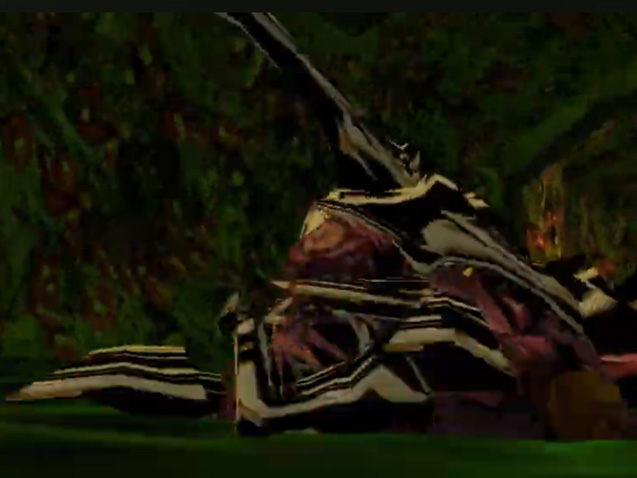
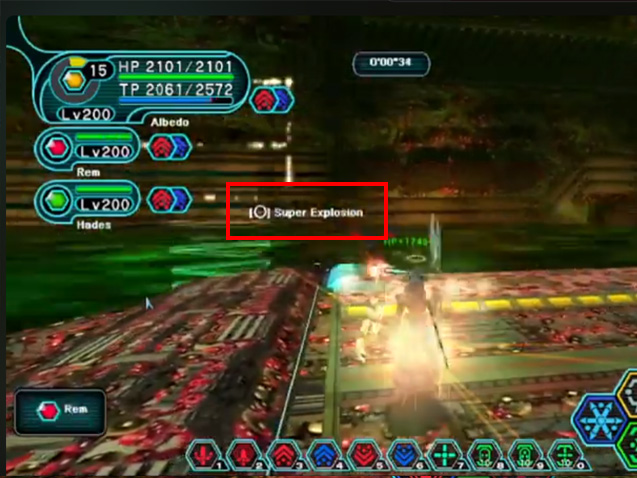
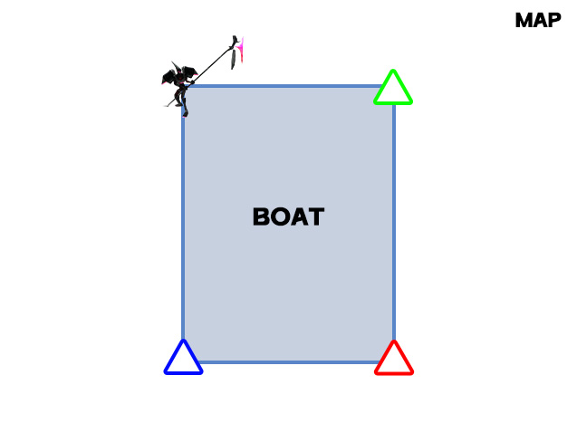
2[!] [<<-->>]Blazing Burst Breath
If players overlap, the damage stacks and becomes more dangerous.
All players move to their corners without overlapping
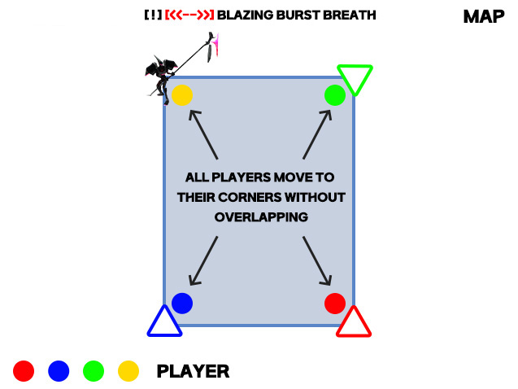
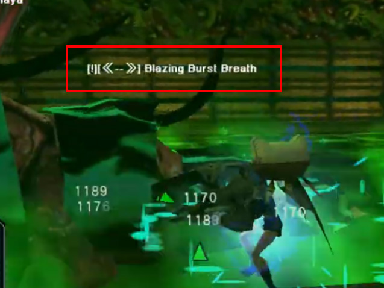
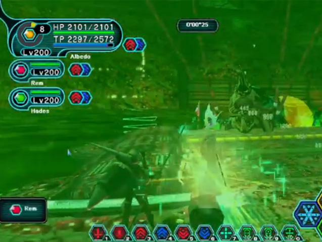
3[O]Super Explosion
You can avoid it by standing against the wall on the opposite side of the glowing effect.
This pattern does not damage nearby players even if someone dies.
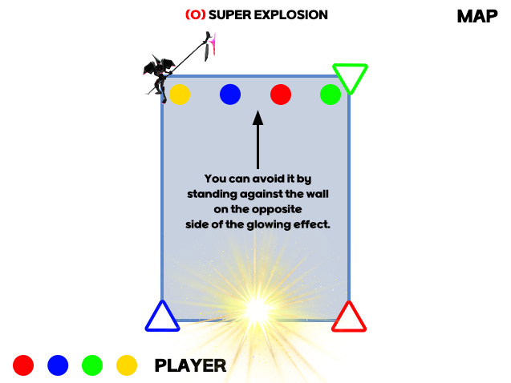
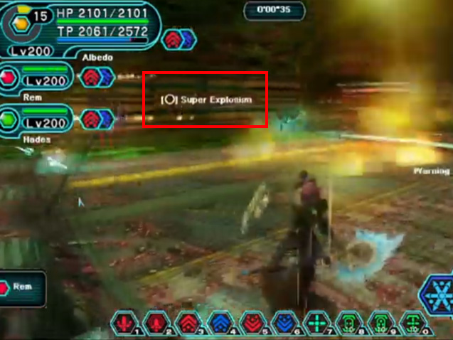
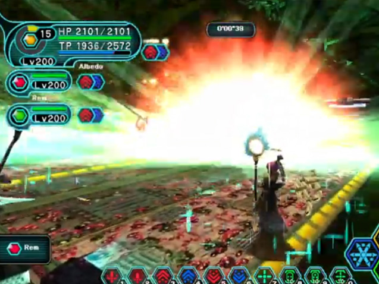
4[!] [->><<-]Toxic Blast
All players should group at the center wall closest to the boss.
- A heart effect will appear upon successful grouping.
- Force keeps spamming Resta to prevent teammates from dying.
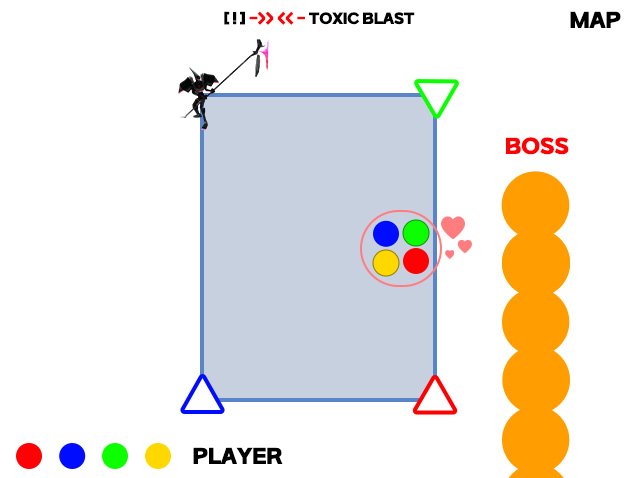
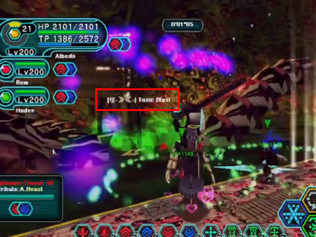
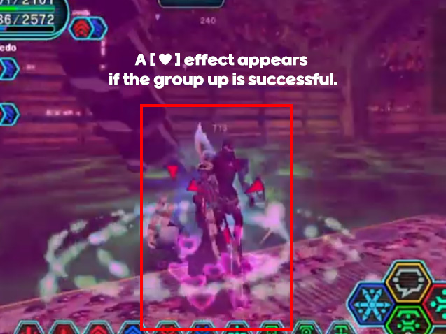
5[O]Ancient Rafoie - Round -
Forces must use Resta to heal players who are hit by explosions or falling rocks during this phase.
- Step 1 : The explosions go around in a full circle in this order: Red Warp → Blue Warp → Ill Gill → Green Warp → Red Warp.
- Step 2 : After the explosion cycle ends, explosions occur at each player's position. Spread out and stand at different wall centers to avoid stacked damage.
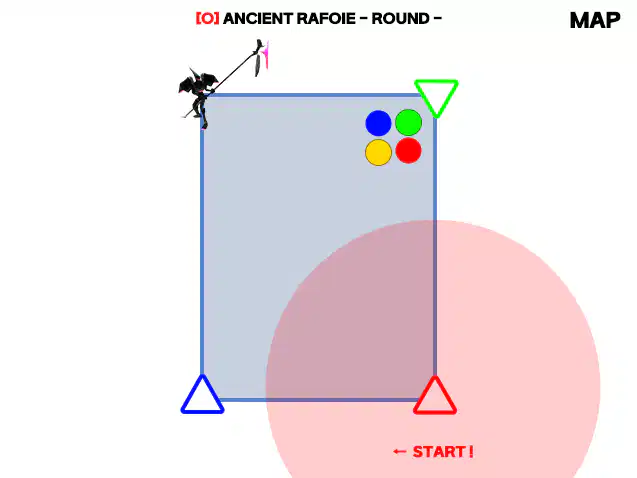
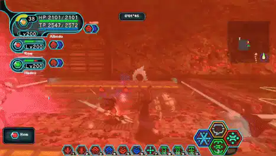
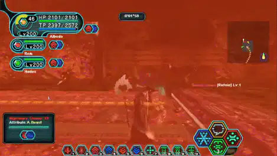
6[O]Ancient Rafoie - Target -
Force should use Resta to keep players alive while the boss fires lasers.
- Step 1 : Avoid the corners, as the electric fields will instantly kill you.
- Step 2 : Bombs appear on each player in the following order: Red → Green → Yellow → Blue, exploding from their character.
- Step 3 : Bomb shows a green circle, then turns purple and locks to the ground at that position.
- Step 4 : [★] Do not move during the green effect. Move only after it turns purple.
Based on 2 players, the bombs explode in order: Red → Green → Red → Green.
Based on 3 players, the bombs explode in order: Red → Green → Yellow → Red.
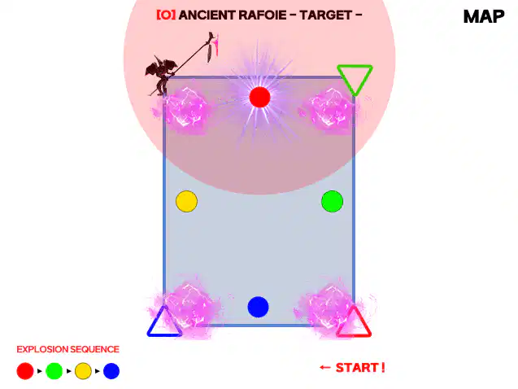
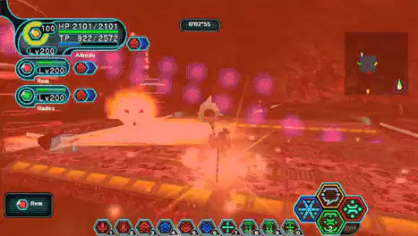
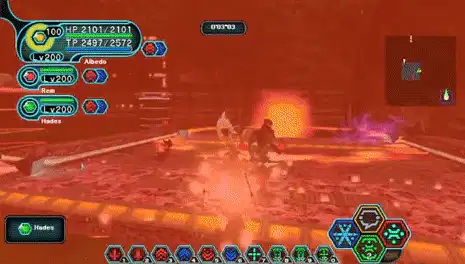
7[!] [III]Ancient Razonde
Based on 4 players: Electric attacks target players in order - Red → Green → Yellow → Blue.
- The attack is always fired 4 times, regardless of the number of players.
- Based on 2 players, the laser targets in order: Red → Green → Red → Green.
- Based on 3 players, the laser targets in order: Red → Green → yellow → Red
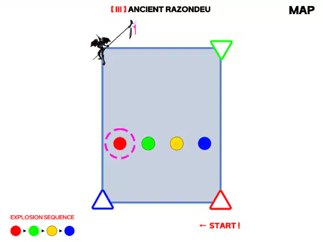
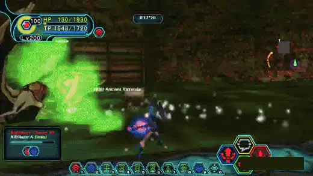
8Boss data
Distorted Nightmare is the EX version of Silent Nightmare: the boss fight only, with a buffed Nightmare Chaser XII. Parts take damage separately, so check which part you are hitting.
| Part | HP | DEF |
|---|---|---|
| Body | 850,000 | 2,200 |
| Body shell | 160,000 | 2,500 |
| Mines | 12,000 | 1,200 |
The head takes damage at DEF 2,500.
| Item | Value |
|---|---|
| Rating | ★8 |
| Structure | Boss fight only, no trash mobs |
| Exclusive drop | Chaos Engine 1/73 (all IDs) |
| Client | Widescreen client (psobbw.exe) required |
Role challenge - The Nightmare Chaser: clear without a wipe and without returning to Pioneer 2 during the boss fight.
Chaos Engine reworks Planet Eater, Mortal Ruin, Ill Gill Reaper and M&A85 Fury. The full effect list is on the Weapon Enhancement page.
Set message speed to 'fastest'. Skill names scroll past before the attack lands, and the faster setting buys you reaction time.